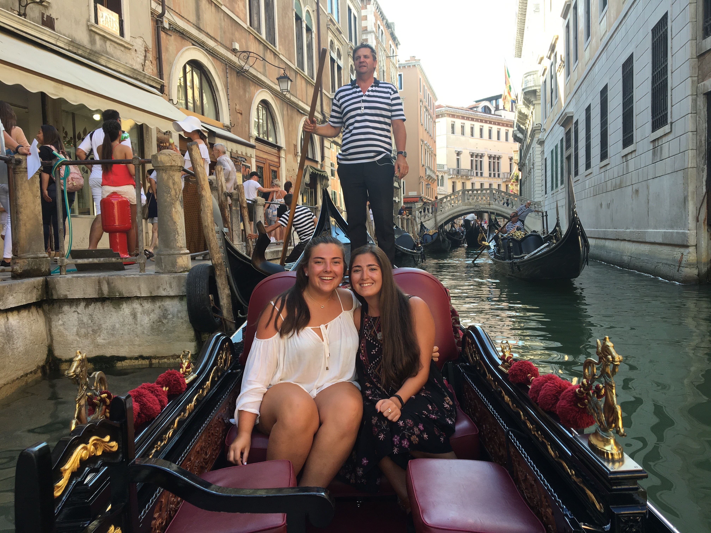

"The world is a book and those who do not travel read only one page" - Saint Augustine
Travel has always been something very important to me. Being able to explore new places and step foot into a world unlike my own is one adds excitment to life. Over the past few years I have been priveleged enough to embark on a few adventures which have taken me to different parts of the world. Even though trips ends and you eventually have to return home, our memories stay with us, reminding us of all the memories from a trip, may they be good or bad.
Despite being a legal document which allows us to travel outside of our own country's borders, passports are also like travel diaries. The pages of passports hold all of the stories and memories from the travels we make. Whenever I am getting ready to go on another trip I find myself looking thorouogh the pages, reminiscing on trips of the past. Expanding on the idea of passports as a type of travel journal, this project, Wanderlust, is a virtual representation of my own passport. While each stamp represents a different adventure, each page of this website is a collection of my memories, photos, and stories from my travels. These adventures and travels that I have been on have in part shaped me into the person that I am today, and Wanderlust will forever remind me of where I've been and where I want to go next.
Costa Rica
In the Summer of 2015 I travelled to Costa Rica with a teen travel company called Rustic Pathways. This trip will always hold a special place in my heart for many reasons. Firstly, this was my first time travelling outside of the country, let alone travelling by myself. I had to beg and convince my paretns to allow me to go on this trip. I originally wanted to go to Thailand, but they convinced me to go to Costa Rica since it was closer to home. Honestly, I was a little bit disappointed that I was going to Costa Rica instead of somewhere "cooler." But looking back on it now, I would never trade in the experience that I had in Costa Rica. My time in Costa Rica taught me more about the world, and myself, and how important it is to give back to others.
Morocco
After travelling to Costa Rica with Rustic Pathways the Summer before, I knew that I wanted to go on another trip. In the Summer of 2016 my wishes came true and I was able to travel to Morocco on a trip called "Moroccan Wanderer." On this trip myself and 13 others explored all over the country of Morocco for two weeks. Again, this was an experience I would not trade for the world. The reason I chose Morocco over other palces was becasue I knew almost nothing of the North African nation and I wanted to go somewhere outside of the box. Once again, my time in Morocco opened my eyes and educated me about a culture I knew little about, and changed my perspective of the wrold and my place in it.
Italy
After speding the past two Summers traveling the world with strangers, in the Summer of 2017 I decided to finally go on an adventure with one of my best friends, Marcella. As a graduation present my paretns bought me a trip to Italy where we visited 12 cities in 11 days on the trip Italy Bellisimo through Trafalgar. After the whirlwind of a trip, we journeyed down South to Magisano, the village where Marcella's family is from. This part of the trip allowed us to see a different side of Italy, the part that experiences less tourism than cities like Rome or Florence. Unlike my past two summers, I am still able to reminisce about the food, sights and expereiences of this trip with Marcella, and I will always cherish these shared memories.
Spain
In the Fall of 2017 my friends and I disperesed across the country when we all began college. Within two months of starting at the University of Miami, I received a call from my friends Marcella and Quinn, asking what I thought about travelling to Spain over the Summer. That conversation quickly turned into us convincing our parents to give us permission, which quickly turned into us booking tickets to Barcelona. This trip, in the Summer of 2018, was our first time all travelling together, but also our first time travelling on our own. While we faced our fair share of difficulties, we were able to work through them and had an amazing 9 days exploring the country together. This trip truly taught me it is not only about the destination, but also the journey. Also, it showed me that despite disagreements and fights, friendships will survive.